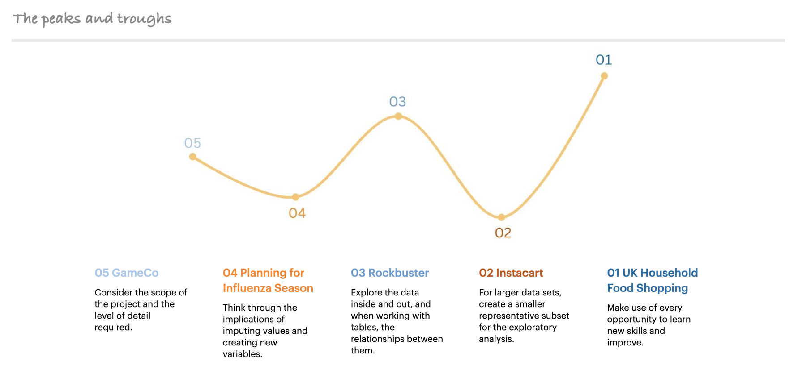

"I’ve spent the last decade enthusing young people and now it’s time to act on my own enthusiasm.
To go back to doing something I also love and that matches my skills, interests, experience and qualifications in a new field."
Naturally curious, I am a versatile and self-motivated data analyst with a proven ability to learn and apply new technologies. Before making the natural move into data analytics I worked as a researcher in academia, where I used my analytical skills to define questions and problems. Then delved deeper to understand the constituent parts before applying my creative abilities to find a solution and draw relevant conclusions. In my role as a STEM (science, technology, engineering and mathematics) communicator, I created concise stories to explain complex information and difficult concepts.
And although nothing will ever beat being called the ‘Superhero Lady’, I enjoy using my analytical and problem solving skills. All through my career I have found pleasure in analyzing and solving problems, especially the joy of the Eureka moment when the solution becomes clear!
Solution-focused and persistent I have experience in data processing, analysis and visualisation using Excel, Python, SQL and Tableau.
Every project has it's own peaks and troughs, and here are some of the ones encountered as I built my portfolio.
Currently, I am seeking roles where I can can apply my technical skills in data cleaning, wrangling, analysis and visualisation to help organisations translate data into insights that can transform lives.